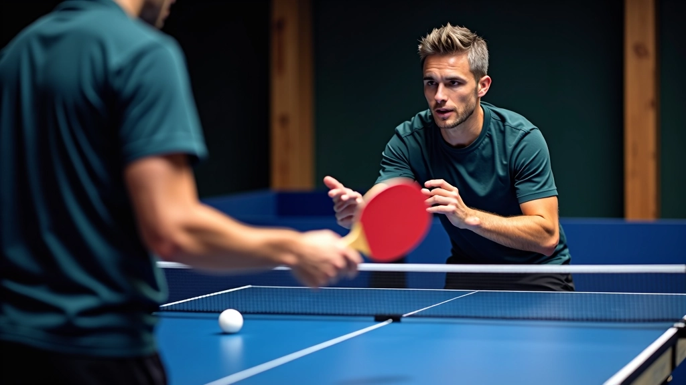

قصتنا
كيف بدأنا
بدأنا درايف تايبل للتدريب المتقدم لأننا آمنا بأن تنس الطاولة يحتاج إلى تدريب منظم وعملي. الفكرة بسيطة — لا يوجد اختصارات في بناء المهارات. كل لاعب يستحق التدريب الصحيح من البداية.
في صالة المعادي، وجدنا المكان المناسب لهذه الرؤية. ما نقدمه ليس مجرد دروس، بل برنامج شامل يركز على فهم أساسيات اللعبة. التغذية المتعددة بالكرات ليست مجرد تمرين روتيني — إنها الطريقة الأفضل لتطوير سرعة رد الفعل والدقة والتوازن الحركي.
التدريب المركز والواضح يساهم في تطور مهارات اللاعبين. نحن نركز على التفاصيل الصغيرة التي تحدث فرقاً حقيقياً — موضع القدمين، زاوية المضرب، توقيت الضربة.
